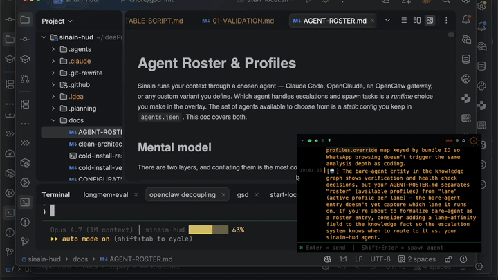

Sinain captures your screen and audio continuously, distills the stream into a structured live knowledge graph of facts, entities, and decisions — accessible from MCP, a web UI, and a screen-recording-invisible HUD overlay.
npx @geravant/sinain@latest start

Three pipelines, one knowledge graph. Sinain extracts atomic facts, entities, and decisions with an LLM — then integrates them through deterministic graph operations, so nothing important quietly disappears.
<private> tag stripping and auto-redaction of credentials and
tokens happen before anything leaves your machine.
Atomic claims, people / projects / topics, what was chosen and why. Extracted by an LLM, integrated by deterministic graph ops — no LLM in the integration step.
Agents read it via MCP. You browse it at localhost:9500/knowledge/ui/.
You glance at it through a HUD that is invisible to screen capture.
Sinain feeds the same screen and audio context to any MCP-compatible agent. Switch on the fly — no restart, no context loss.
Tested with Claude Code, OpenClaude, Codex, Goose, and Junie — any MCP-compatible
agent works. Add custom profiles (personal Claude config, alternate models) by
editing agents.json; the roster is the source of truth. Knowledge
modules travel with you — export from one machine, import on another.
profile.type, not the profile name — first-class custom profiles like pclaude.export-knowledge / import-knowledge.By default, sinain uses cloud APIs (OpenRouter) for transcription and analysis. Need tighter control? Flip the mode — no code changes.
The HUD overlay never appears in screenshots, recordings, or screen shares —
set NSWindow.sharingType = .none at the AppKit level. Verifiable
via split-screen recording with QuickTime + OBS + Loom; the HUD is absent from
all three.
off — all data flows freely; maximum insight quality.standard — auto-redacts credentials before cloud APIs (wizard default).strict — only summaries leave your machine; no raw text sent to cloud.paranoid — Ollama + whisper.cpp, embedding model pre-cached. Zero network calls at runtime.All data flows freely. Best fidelity, broadest model choice.
Auto-redacts credentials and tokens before cloud APIs.
Only summaries leave your machine. No raw text sent to cloud.
Ollama + whisper.cpp. Zero network calls at runtime.
On first run, sinain runs an interactive setup wizard, auto-downloads the assets it needs (~112 MB total), and starts every service for you.
Pick transcription backend, paste an API key (or skip for fully local), choose your agent, set privacy mode.
Overlay app (~17 MB), sck-capture binary (~5 MB), embedding model (~90 MB), Python deps — all cached locally.
sinain-core, sense_client, overlay, agent — running. HUD appears, screen and audio capture begins.
npx @geravant/sinain@latest start --setup — idempotent. Stop / status / no-sense / headless flags available.
Swift talks to ScreenCaptureKit. TypeScript runs the audio pipeline, agent loop,
and knowledge graph. Flutter renders an overlay AppKit refuses to share. The graph
stays private — on your machine, in ~/.sinain/.
┌─── Your Device ─────────────────────────────────────────────────────┐ │ │ │ sck-capture · Swift │ │ ├─ system audio (PCM) ────────────────────► sinain-core :9500 │ │ └─ screen frames (JPEG) ──► sense_client ─── POST /sense ───► │ │ │ │ │ ┌────────┘ │ │ ▼ │ │ sinain-core · TypeScript │ │ ├─ audio pipeline → transcription │ │ ├─ agent loop → digest + HUD text │ │ ├─ knowledge graph (private, on-device)│ │ └─ WebSocket feed ─────────────┐ │ │ ▼ │ │ overlay · Flutter │ │ private · invisible to capture│ │ │ └──────────────────────────────────────────────────────────────────────┘
Plus a fully-local runtime if cloud isn't on the table — Ollama + whisper.cpp handle transcription and vision.
General use. Balanced size, speed, and quality — start here.
Best accuracy when you can spend the RAM and per-frame latency.
Fastest option. Trade accuracy for snappy on-device response.
sinain_* tools, one MCP install.The wizard detects which MCP agents you have installed and registers sinain for each one you select. Re-runnable any time; idempotent.
Everything that didn't fit on this page. Each link goes to the canonical doc in the repo.
One install. macOS 12.3+. MIT-licensed. Private by default.